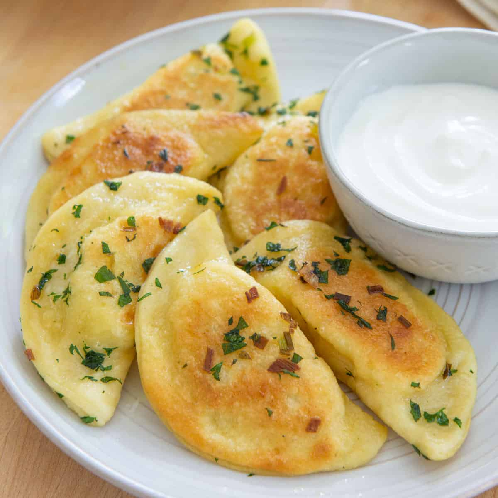

Pierogies

Pierogi are filled dumplings of Central European origin made by wrapping
unleavened dough around a savory or sweet filling and cooking in boiling
water. These dumplings are popular in Slavic (Polish, Slovak, Russian,
Ukrainian), Baltic (Latvian, Lithuanian), and other Eastern European cuisines,
where they are known under their local names.
Ingredients
- 2 cups all-purpose flour
- 1/2 teaspoon salt
- 1 large egg
- 1/2 cup sour cream
- 1/4 cup butter, softened
- 1/2 cup butter, softened
- 1/2 cup chopped onion
- 1/2 teaspoon salt
- 1/4 teaspoon ground black pepper
- 1 cup sour cream
Steps
-
In a medium bowl, stir together the flour and 1/2 teaspoon of salt. Add the
egg, sour cream, and 1/4 cup of butter; stir until the dough comes together.
Knead the dough on a lightly floured surface until firm and smooth. Cover
and refrigerate for 1 hour.
-
In a large skillet, melt 1/2 cup of butter with the onion. Cook and stir
until the onion is soft and translucent. Remove from the heat and set aside.
-
Roll out the dough on a lightly floured surface to 1/8 inch thick. Cut into
3 inch rounds. Place a small spoonful of the onion mixture onto the center
of each round. Moisten the edges with water, fold over, and press together
with a fork to seal.
-
Bring a large pot of lightly salted water to a boil. Add the perogies and
cook for 3 to 5 minutes or until perogies float to the top.
-
In a small bowl, mix together the remaining butter with the sour cream.
Serve with the perogies.